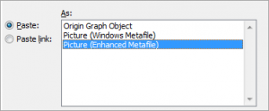

 |
Wenn sich das Origin-Diagramm als eingebettetes Objekt in Anwendungen wie Word oder PowerPoint befindet, werden alle Daten, die mit dem Diagramm verbunden sind, ebenfalls mit dem Word-Dokument gespeichert. Dadurch entsteht die Flexibilität, doppelt auf das Diagramm in einer neuen Instanz von Origin klicken zu können und es dort zu bearbeiten. Sollten sich jedoch viele Diagramme als Objekte in einem Dokument befinden, wird die Dateigröße des Dokuments groß, wenn viele Daten mit den Diagrammen verbunden sind. |